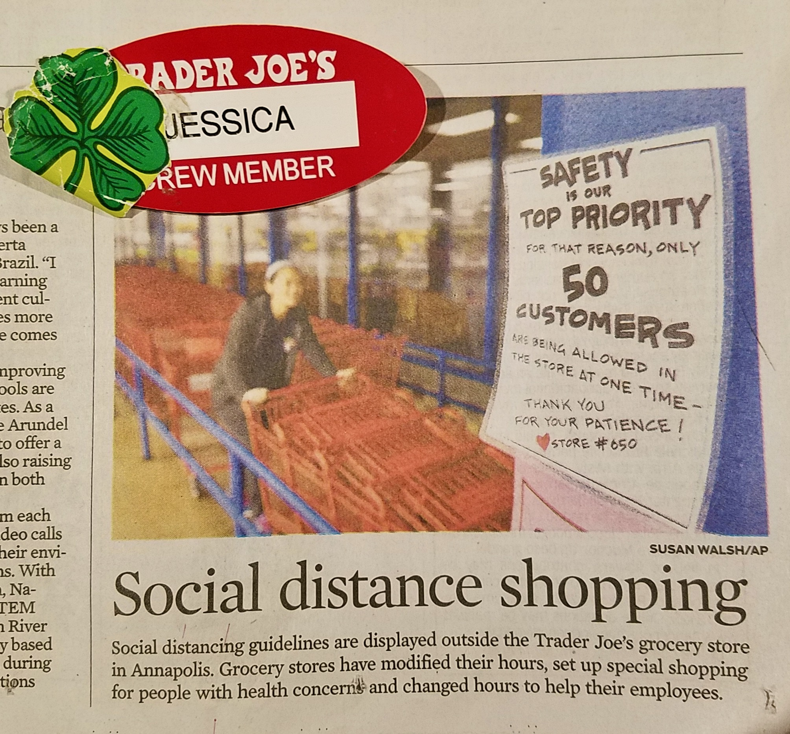

Where were you during COVID-19?
I was incredibly grateful to be working at Trader Joe's, a leader in the COVID-19 response.
That is me sanitizing carts and adding to the stack for customers. Word had traveled in the Annapolis area that
our store was a leader in the response to COVID-19 and I happened to be at the right place at the right time when
a reporter stopped by to take pictures. I have always been a fan of Trader Joe's products and vibrant culture which led
me to apply for a job there. Changing perspectives from loyal customer to crew member has deepened my respect and love of
this company. In addition to their products, sustainibility efforts, daily donations to homeless shelters, and incredible benefits,
the way that I have been treated by my management team has been nothing short of appreciation, respect, and gratitude.